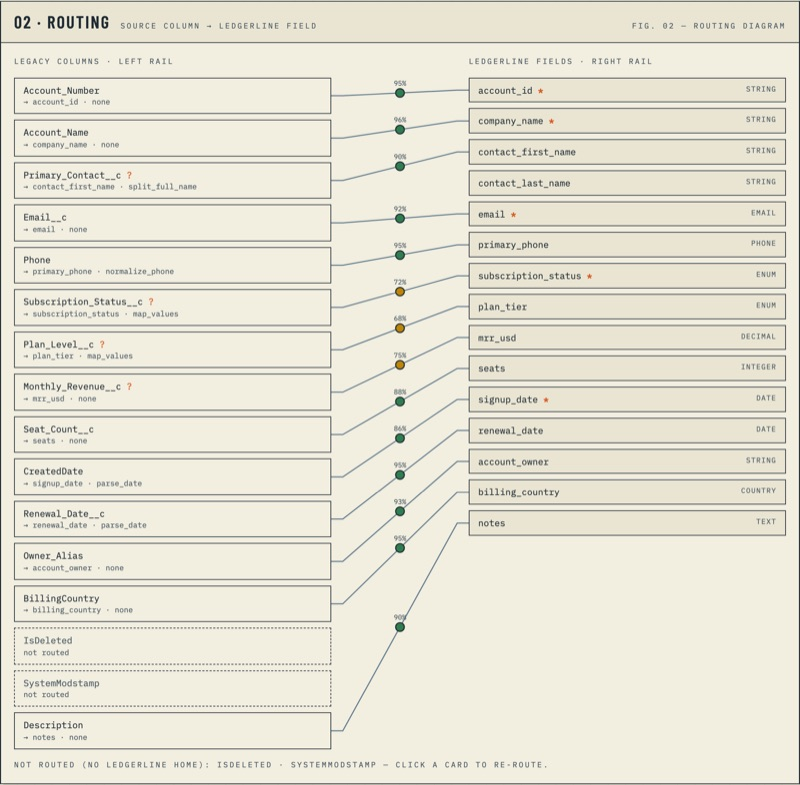
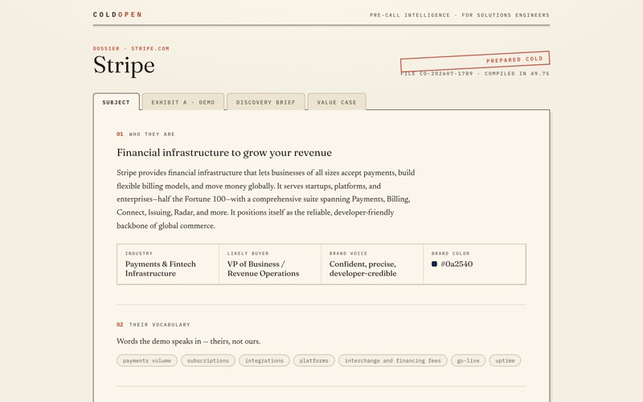
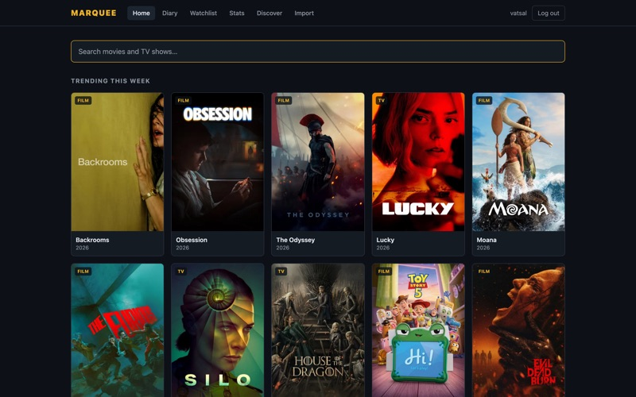
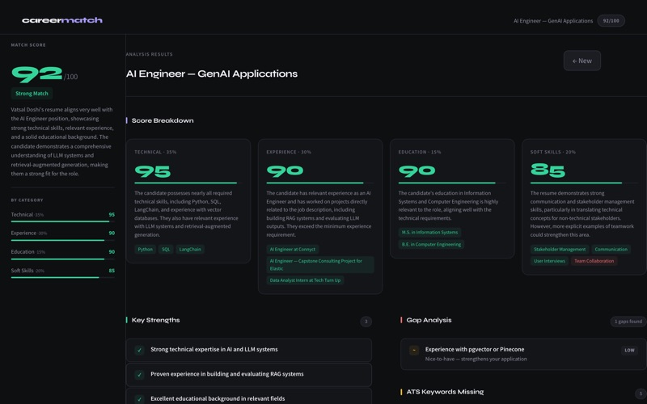

// AI ENGINEER · DATA ANALYST
VATSAL DOSHI
I build LLM/RAG systems — and the analytics that prove they work. Currently shipping recommendations to 50K+ daily queries as AI Engineer at Connyct.
four films, one diagnosis. choose.
DAILY QUERIES SERVED BY A REC ENGINE I TUNE AT CONNYCT
CITATION ACCURACY ON A RAG SYSTEM DELIVERED TO ELASTIC — UP FROM 90%
PARTNER DOC SEARCH TIME — DOWN FROM 10+ MINUTES
MANUAL REPORTING TIME CUT FOR A DC NONPROFIT SERVING 1,500+ STUDENTS
The AI proposes.
Deterministic code executes.
And every number gets a defense.
I'm Vatsal — an engineer from India, via an M.S. at the University of Maryland, now working remotely from Chicago. Days go to Connyct, where I run the AI features of a short-video app for college students; nights go to building tools like Switchboard and Marquee — a movies + TV tracker I built because I log everything I watch.
Off the clock: Formula 1 race weekends, planning trips around roller coasters (the enthusiast kind of enthusiast), and a boba habit I refuse to quantify — the one number that doesn't get a dashboard.
I work the full loop: user interviews → SQL/pandas analysis → LLM systems in production → dashboards that tell leadership the truth. My projects share one rule — models are never trusted with what code can verify. Retrieval gets test suites, recommendations cite their sources, and migrations ship with rollback plans.
NOW
AI Engineer @ Connyct
Short-video social platform for college students, with a Warner Music Group content partnership. Scaled the content recommendation engine to 50K+ daily queries; 92% user satisfaction across AI features from 50+ user interviews.
AI Engineer @ Elastic — consulting engagement, UMD
Built and delivered the Partner-Docs RAG assistant below — hybrid retrieval, 50–60% latency cut, a 25-case accuracy suite, and iterative delivery with Elastic client stakeholders.
Data Analyst Intern @ Tech Turn Up
Sole data analyst for a DC nonprofit teaching 1,500+ K-12 students. Built the analytics stack from scratch — 8 Tableau dashboard pipelines, 75% less manual reporting, and cohort analysis that drove an executive restructuring.
2025
M.S. Information Systems @ University of Maryland
College Park, MD. Coursework across data analytics, database management, designing AI systems, and cloud computing & big data. Certified ScrumMaster; Google Project Management Certificate.
2024
B.E. Computer Engineering @ Gujarat Technological University
Ahmedabad, India — CGPA 3.8/4.0.
-
001

DAYS → <3 MINSwitchboard ↗
AI data-migration copilot. Legacy CRM export in, clean import out — the LLM proposes mappings and consultant-style questions; deterministic pandas executes. Days of onboarding → under 3 minutes.
-
002

URL → DEMO IN ~37sColdOpen ↗
AI demo engine for sales teams. Paste a prospect's URL → a tailored interactive demo, a 4-beat talk track, and an ROI brief — bound together by a single sales thesis so they never contradict.
-
003

TASTE, EXPLAINEDMarquee ↗
Movies + TV tracker with an AI taste engine. Recommendations cite the films of yours they reason from, match scores are honest, and every AI suggestion is verified against TMDB before it renders.
-
004CLIENT WORKNO PUBLIC ARTIFACT90% → 95%+ CITATIONS
Partner-Docs RAG FOR ELASTIC (NYSE: ESTC)
Production-grade document assistant for Elastic's global partner program. Hybrid BM25 + vector retrieval over 1,900 chunks, page-level citations, validated across 5 LLM providers with client stakeholders.
-
005

RESUME → VERDICT IN ~30sCareerMatch ↗
RAG resume-vs-JD analyzer — upload a resume, paste a job description, get a weighted score, gap analysis, and the missing ATS keywords as a PDF report. Scored against an explicit rubric, not vibes.
-
006
PLANNER → RESEARCHER→ ANALYST → WRITERLIVE AGENT FEEDQUESTION → CITED REPORT
Multi-Agent Research Assistant ↗
Four agents split a research question, search the web, run analysis code in a sandboxed subprocess, and return a cited report — with a live Streamlit feed of them working. Citations travel as state, so the Writer can't cite what the Researcher never found.
-
007
10,000+ PAGES INDEXED<5% HALLUCINATION<600ms ON CACHE HIT+35% RELEVANCE vs PURE VECTOR
CodeQuery ↗
Ask Python library docs questions in plain English — answers come only from the actual documentation, with cited pages, so deprecated parameters and invented methods never reach you. Hybrid retrieval with semantic caching on Redis.
OPEN TO DATA / AI ANALYST & RAG-LLM ENGINEER ROLES
vatsal.doshi.cs@gmail.com →prefer a CLI? press [/] and type 'help'. there are secrets.